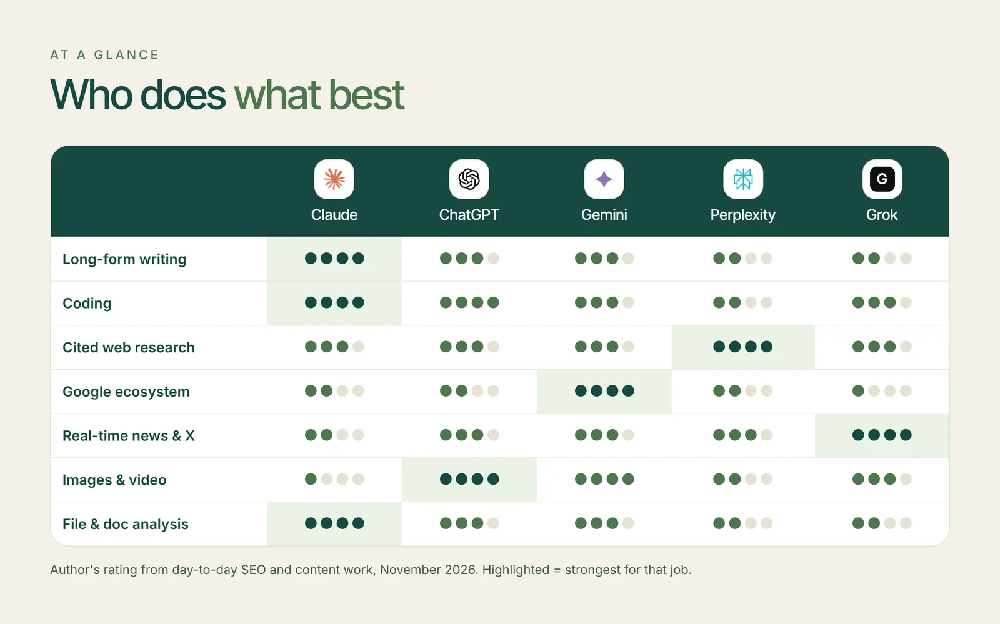
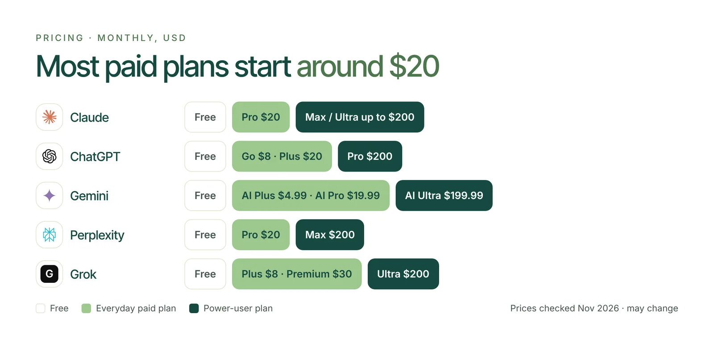
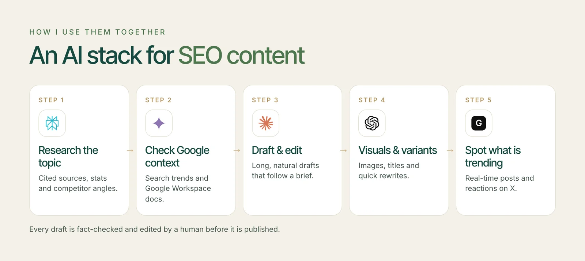

- Writing: Claude
- All-rounder & images: ChatGPT
- Google apps: Gemini
- Cited research: Perplexity. Real-time news: Grok
- Cost: all have free plans; paid plans start around $20/month
Claude vs ChatGPT vs Gemini vs Perplexity vs Grok is the comparison almost every marketer, writer and business owner is trying to settle in 2027. All five can write, summarize, research and answer questions, so on the surface they look interchangeable. In daily use they're not.
I use all five every week in my work as an e-commerce SEO specialist: researching keywords, drafting articles, checking facts and keeping up with trends. This guide breaks down what each one does best, where it falls short, what it costs, and which one fits the job you need done.
Quick verdict: which AI should you use?
Answer: there's no single best AI in 2027. Choose Claude for writing and long documents, ChatGPT for an all-in-one assistant, Gemini for Google Workspace, Perplexity for cited research, and Grok for real-time news and X. If you can only pay for one, pick the one that matches the work you do most.
Claude vs ChatGPT vs Gemini vs Perplexity vs Grok at a glance

| AI | Made by | Best for | Biggest weakness |
|---|---|---|---|
| Claude | Anthropic | Writing, editing, long documents, coding | Doesn't create images |
| ChatGPT | OpenAI | All-round assistant, images, voice | Writing can sound generic without a strong prompt |
| Gemini | Gmail, Docs, Drive, YouTube, Search | Less useful outside Google's apps | |
| Perplexity | Perplexity AI | Research with cited sources | Weaker at long creative writing |
| Grok | xAI | Real-time news and X posts | Writing quality is less consistent |
Claude: best for writing, editing and long documents
Claude, made by Anthropic, is the assistant I reach for when the words matter. Its drafts read the most like a careful human writer, and it follows detailed briefs closely, including tone, structure and "don't say this" rules.
- Strengths: natural long-form writing, careful editing, reading long PDFs and spreadsheets, coding, and building small tools and web pages. This website started as a Claude artifact; see how I built it for free.
- Weaknesses: it doesn't generate images, and the free plan has tighter usage limits than some rivals.
- Pick it if: you write articles, reports, product descriptions or emails, or you work with long documents.
ChatGPT: best all-rounder
ChatGPT, from OpenAI, is the most widely used AI assistant and the one with the broadest set of features in a single app: chat, web search, image generation, voice conversations, file analysis and custom GPTs.
- Strengths: versatility, image creation, voice mode, a huge library of custom GPTs, and a cheap entry plan.
- Weaknesses: without a detailed prompt, its writing tends to fall into a recognizable "AI voice" that needs heavier editing.
- Pick it if: you want one tool that does a bit of everything, including visuals.
Gemini: best for Google users
Gemini is built into Google's products. If your day runs on Gmail, Google Docs, Sheets, Drive and YouTube, Gemini can work inside them, which none of the others do as smoothly.
- Strengths: deep Google Workspace integration, strong image and video features, YouTube summaries, and a low-cost entry plan.
- Weaknesses: its biggest advantages disappear if you don't use Google's apps.
- Pick it if: your team already works in Google Workspace.
Perplexity: best for research with sources
Perplexity works more like a search engine than a chatbot. It searches the web, writes a short answer and puts a numbered source next to each claim, so you can check where every fact came from. Paid plans also let you switch between models from other AI companies (Second Talent).
- Strengths: cited answers, Deep Research reports, the Comet browser, and choice of underlying models.
- Weaknesses: it's built for finding facts, not for long, polished writing.
- Pick it if: you research before you write and need sources you can link to.
Grok: best for real-time news and X
Grok, made by xAI, is connected directly to X (formerly Twitter). That makes it the fastest way to see what people are posting about a product, brand or news story right now.
- Strengths: real-time X posts, trend spotting, a casual tone and image generation.
- Weaknesses: writing quality is less consistent, and social posts aren't reliable sources on their own.
- Pick it if: you track trends, launches or public reactions.
Claude vs ChatGPT vs Gemini vs Perplexity vs Grok pricing

| AI | Free plan | Everyday paid plan | Power-user plan |
|---|---|---|---|
| Claude | Yes | Pro, $20 | Up to $200 |
| ChatGPT | Yes | Go $8 · Plus $20 | Pro, $200 |
| Gemini | Yes | AI Plus $4.99 · AI Pro $19.99 | AI Ultra, $199.99 |
| Perplexity | Yes | Pro, $20 | Max, $200 |
| Grok | Yes | Plus $8 · Premium $30 | Ultra, $200 |
Tip: for most people, one $20 plan is enough. Use the free plans of the others for the jobs they do best.
Best AI by task
| Task | Best pick | Runner-up |
|---|---|---|
| Blog posts & articles | Claude | ChatGPT |
| Research with sources | Perplexity | Gemini |
| Product descriptions | Claude | ChatGPT |
| Images for social posts | ChatGPT | Gemini |
| Emails & docs in Google | Gemini | Claude |
| Coding & web pages | Claude | ChatGPT |
| Breaking news & trends | Grok | Perplexity |
| Summarizing long PDFs | Claude | Gemini |
Which AI is best for SEO and content writing?
For SEO work I don't rely on one tool. I use each for the step it does best, then edit and fact-check everything myself before it goes live.

- Research with Perplexity: collect stats, sources and what competing pages cover.
- Check Google context with Gemini: look at how Google frames the topic and pull notes from Docs and Drive.
- Draft and edit with Claude: write from a detailed brief with the keyword, headings and internal links.
- Create visuals with ChatGPT: featured images, title variations and quick rewrites.
- Spot trends with Grok: see what shoppers are saying about a product or brand right now.
No AI tool can rank a page on its own. Google rewards helpful, original content, so the human parts (real experience, real data and careful editing) are what make AI-assisted pages rank and get cited in Google AI Overviews.
How to choose the right AI for you
- Start with your main job. Writing → Claude. Research → Perplexity. Google apps → Gemini. Visuals → ChatGPT. Trends → Grok.
- Test the free plans first. Give all five the same real task from your work and compare the results.
- Pay for one, not five. Upgrade the tool you open most often.
- Always fact-check. Every AI can be confidently wrong. Check numbers, names and dates before you publish.
- Protect private data. Read each tool's privacy settings before you paste in client or customer information.
Frequently asked questions
Which AI is the best overall in 2027?
There is no single winner. ChatGPT is the most versatile all-rounder, Claude is the strongest writer, Gemini is best inside Google's apps, Perplexity is best for cited research, and Grok is best for real-time news and X.
Is Claude better than ChatGPT for writing?
For long-form writing and editing, Claude usually produces more natural drafts that follow a brief more closely. ChatGPT is more versatile overall and can also create images, so many writers use both.
Is Perplexity better than Google for research?
Perplexity is faster for getting a summarized answer with sources attached, which is useful for research. Google Search is still better for browsing many results, local results and shopping.
Are the free versions good enough?
Yes, for light use. Every one of these five tools has a free plan. Upgrade when you hit usage limits or need features like deep research, larger file uploads or the newest models.
Can I use AI to write SEO content that ranks?
AI can speed up research and drafting, but pages rank when they are genuinely helpful, accurate and original. Add real experience and data, edit the draft carefully and fact-check every claim before publishing.
Conclusion
The Claude vs ChatGPT vs Gemini vs Perplexity vs Grok question doesn't have one winner, and that's good news. Claude is the writer, ChatGPT is the all-rounder, Gemini is the Google expert, Perplexity is the researcher and Grok is the trend-watcher. Try the free plans with a real task from your work, pay for the one you use most, and keep a human in charge of the final edit.
Sources: AI Business Weekly, AI Pricing Index (Nov 2026) · Second Talent, Perplexity AI features 2026 · Fello AI, Best AI models (Nov 2026). Ratings are the author's own and based on her day-to-day work.

Annalyn Bernaldo
Annalyn is an e-commerce SEO specialist in the Philippines who uses Claude, ChatGPT, Gemini, Perplexity and Grok every week for SEO research and content. Her content ranks #1 on Google and gets cited in AI Overviews.